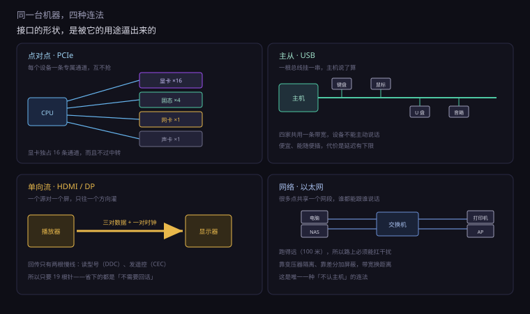
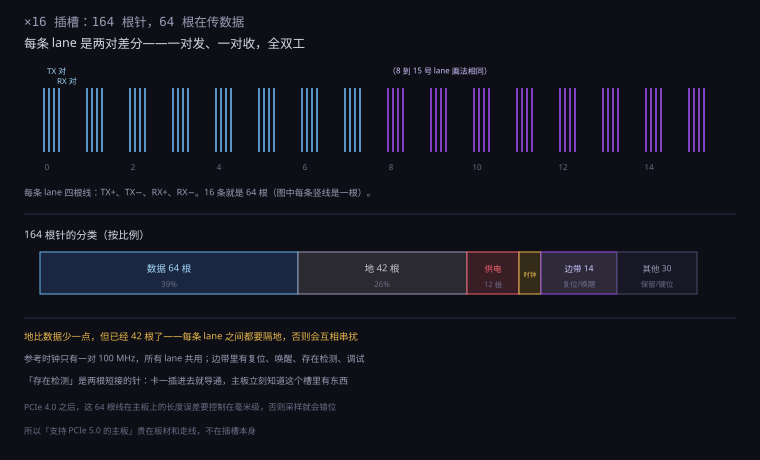
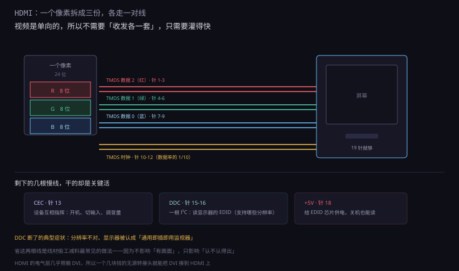
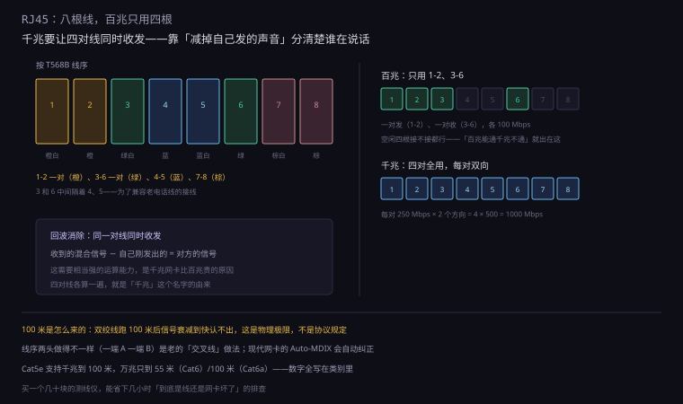
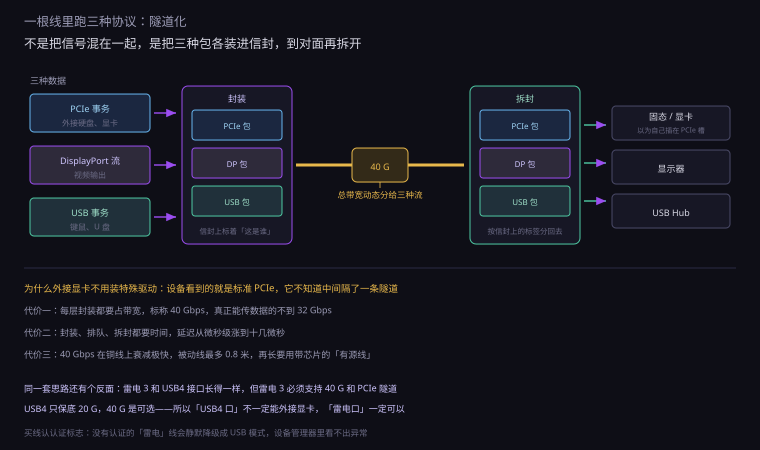
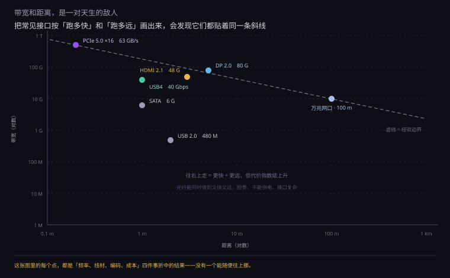

约 1.2 万字 · 6 张图 · 读完你能说清机箱后面每个口为什么长那样、 PCIe 的 ×16 到底是多少根线、以及一根雷电线怎么同时当三种线用
先站在机箱后面看一眼。从上往下大概是：HDMI、DisplayPort、USB、网口、 音频插孔、天线接口；再往下是显卡的 PCIe 挡板（也是 HDMI/DP）； 主板上还竖着一条长插槽和几条短插槽。
这些口按「怎么连」可以分成四类，每一类的物理形态完全不同：
| 类型 | 代表 | 拓扑 | 为什么这样 |
|---|---|---|---|
| 点对点总线 | PCIe | 每个设备一条专属通道 | 显卡要独占总线，不能被别人抢 |
| 主从总线 | USB | 一根线挂很多设备 | 外设慢、便宜、要能随便插 |
| 单向流 | HDMI、DP | 一个源对一个屏 | 视频只需要往一个方向灌 |
| 网络 | 以太网 | 很多点共享一个网段 | 要跑一百米，要能连交换机 |
这四类背后的取舍，可以归结成三个问题：
第一，谁来决定什么时候说话？ USB 是主机说了算（上一节讲过）；PCIe 是双方随时可以说（全双工、有流量控制）； 以太网是「谁有数据谁就说，撞了再退让」；HDMI 是源端一直说，屏只能听。
第二，线要跑多远？ 机箱内 20 厘米，机箱外 2 米，网线 100 米。 距离决定了要不要变压器、要不要屏蔽、要不要把电压抬高。
第三，错了要不要重传？ PCIe 要（有 CRC 和重传），以太网要（TCP 层重传），HDMI 不要（视频丢一帧就丢一帧）。 这一条直接决定了协议栈的复杂度。
机箱后面通常还有三个 3.5 毫米圆孔：绿色（耳机/音箱）、 粉色（麦克风）、蓝色（线路输入）。它们传的是模拟信号—— 已经解调好的、直接推动喇叭的电压波形。
在数字接口遍地的今天，模拟口为什么还留着？三个原因：
代价是容易受干扰。模拟信号在机箱里跑， 旁边就是显卡和开关电源，底噪、电流声、爆音都可能混进来。 这就是为什么「主板集成声卡有底噪」是个常见抱怨—— 不是芯片差，是它住在了一个电磁环境很糟的地方。
所以专业场合会用「外置声卡」：把模拟电路搬到机箱外面， 远离干扰源。这也是「数字传输 + 外部解码」这个思路的由来。
这个问题很自然：USB 已经统一了外设，为什么不能再往前走一步， 把视频、网络、显卡全塞进一个口？
因为这三件事的电气要求互相矛盾，统一了就得处处将就。
功率。USB 设备可能只吃几毫瓦（一个鼠标）， 显卡要吃 450 瓦。同一套供电线路要同时伺候这两者， 要么线粗得离谱，要么小设备被大电流的噪声淹没。
距离。PCIe 在机箱里跑 20 厘米，以太网要跑 100 米。 前者可以靠极高的频率换带宽，后者必须把频率压下来、 用复杂的编码对抗衰减。这两个方向是相反的。
可靠性。PCIe 错一个字节要重传，HDMI 丢一帧就丢一帧。 前者需要完整的确认与重传机制，后者需要绝对稳定的时序。 把它们揉进同一个协议，两边都得背对方的包袱。
USB4 看起来在统一，但它统一的是接口形状和上层隧道， 底下的 PCIe 还是 PCIe，DP 还是 DP。 它做的是「一个信封装三种信」，不是「发明一种新语言」。

PCIe 全称是 Peripheral Component Interconnect Express， 但它的设计思路和老 PCI 完全是两回事。
老 PCI 是一条共享总线：所有插槽挂在同一组线上， 同一时刻只能有一个设备说话。插的卡越多，每人分到的时间越少。 这在 1990 年代够用，因为显卡和网卡都不怎么吃带宽。
到 2000 年代初，显卡开始吃不消了。于是一个根本性的改动： 把共享总线换成点对点连接。
什么意思？主板芯片组和每一个 PCIe 设备之间，都有一组专属的线。 显卡的数据不走别人的路，网卡的数据也不跟显卡抢。 这不是「一条更宽的路」，是「每家修一条私家高速」。
这个改动带来的第一个后果是布线量爆炸。 一条 lane 是四根线（两对差分），×16 就是 64 根信号线。 一块主板要引出 20 多条 lane，就是上千根线。 这就是为什么主板PCB 从 4 层涨到了 8 层、10 层甚至更多。
第二个后果是需要交换机。点对点意味着没有「总线」了， 显卡、网卡、硬盘各自连到芯片组，芯片组负责把它们的数据转发到内存和 CPU。 这颗芯片就是 PCH（平台控制器中枢），俗称「南桥」。
点对点听起来很美好，但总要有个东西把几十条通道连起来。 现代 PC 里有两个层级：
第一层：CPU 直连。CPU 自己有 16 到 20 条 lane， 直接连显卡和第一块固态硬盘。这一段不经过任何中转， 延迟最低、带宽最大。所以显卡必须插在最上面那条长槽里——那条是直连 CPU 的。
第二层：芯片组（PCH）扩展。CPU 再用 4 条 lane 连到 PCH， PCH 再扇出十几二十条给网卡、声卡、USB、剩下的硬盘。 注意：这十几条通道共享那 4 条上行链路。
这就解释了一个常见现象：同时读两块插在 PCH 上的固态， 速度会比单独读一块慢。 因为它们的总出口只有 ×4，两个人挤一个门。 而插在 CPU 直连槽上的那块，不受影响。
也解释了为什么高端主板要堆 PCIe 通道数： 通道不够，就得让设备共享；共享就有争抢；争抢就有「插了这个就不能插那个」。 主板说明书上那些「×16 或 ×8+×8」的注释，说的就是这个。
如果你拆过二十年前的主板，会记得芯片组是两颗芯片： 北桥（靠近 CPU，管内存和显卡）和南桥（管硬盘、USB、网卡）。
北桥当年是主板上的发热大户，因为它要处理内存和显卡之间的高速数据。 后来厂商发现：内存控制器和显卡控制器，干脆搬进 CPU 里更快。 距离更近、延迟更低、还省了一颗芯片。
从 2009 年的 Nehalem 开始，北桥消失了。CPU 直接连内存、直接连显卡， 只剩下一颗「南桥」，改名叫 PCH。 现在主板上那块盖着散热片的方形芯片，就是它。
所以现在的「芯片组」只剩一颗，但它管的事反而更多了： USB、SATA、网卡、声卡、额外的 PCIe、电源管理、BIOS 存储，全归它。 它像一个总管，所有慢速设备都先汇到它这里，再由一条 ×4 的通道送进 CPU。
PCIe 的带宽单位是「lane」（通道）。一根 lane 听起来像一根线， 实际是四根：
为什么是两对？因为 PCIe 是全双工——发送和接收可以同时进行， 各走各的线。这和 USB 2.0 的「一对线轮流用」完全不同。
为什么每一对又是两根？因为差分。 上一节讲过：两根线传同一个信号的正反两面，接收端做减法，共模干扰自动抵消。 PCIe 的信号速率动辄 8 G、16 G、32 G 次每秒， 单端传输在这个频率下根本活不下来。
所以「×16 的显卡插槽」这条广告词，翻译过来是： 64 根信号线，16 条独立通道，每条都能同时收发。 这也是为什么显卡金手指那么长、那么密。
顺便解释一个常见困惑：为什么显卡插在 ×4 的插槽里也能亮，但性能掉一半？ 因为通道数少了，每条 lane 的速率没变，总带宽就只剩四分之一。 显卡还能工作，只是喂不饱。
×16 的插槽不必真的跑 16 条通道。主板和 CPU 支持一种叫 拆分（bifurcation）的功能： 把一条 ×16 切成 ×8+×8，或者 ×4×4×4×4。
这在服务器上很常见：一个 ×16 槽插四块 ×4 的网卡或加速卡， 比插一块显卡有用得多。消费级主板上则是 「插第二块显卡时，两条槽各跑 ×8」。 BIOS 里那个「PCIe Bifurcation」选项，就是干这个的。
不同用途需要的通道数差别很大，可以看这张表：
| 设备 | 典型通道 | 为什么 |
|---|---|---|
| 显卡 | ×16 | 每帧要搬几百 MB 的纹理和顶点 |
| 固态硬盘 | ×4 | 已经能跑 7 GB/s，再多也用不上 |
| 万兆网卡 | ×4 | 10 Gbps 只要 ×1 就够，留余量 |
| 声卡 | ×1 | 音频数据量极小 |
| USB 扩展卡 | ×2 – ×4 | 几个 USB 口共享上行带宽 |
有意思的是通道数和实际占用往往不匹配。 一块显卡占着 ×16，实际跑游戏时可能只用了三成带宽； 而一块 ×1 的声卡，反而因为延迟敏感而更在意「直连还是过 PCH」。 通道数是上限，不是消耗。
PCIe 每一代的速率翻倍，但「翻倍」这件事不是简单地把频率乘二。 每两代就要换一次编码方式，因为铜线快撑不住了。
| 版本 | 单 lane 速率 | 编码 | 单 lane 有效 | ×16 有效 |
|---|---|---|---|---|
| PCIe 1.0 | 2.5 GT/s | 8b/10b | 250 MB/s | 4 GB/s |
| PCIe 2.0 | 5 GT/s | 8b/10b | 500 MB/s | 8 GB/s |
| PCIe 3.0 | 8 GT/s | 128b/130b | 985 MB/s | 15.75 GB/s |
| PCIe 4.0 | 16 GT/s | 128b/130b | 1.97 GB/s | 31.5 GB/s |
| PCIe 5.0 | 32 GT/s | 128b/130b | 3.94 GB/s | 63 GB/s |
注意「GT/s」这个单位：它是每秒传输次数，不是每秒比特数。 8b/10b 编码时，一次传输只带 8 位有效数据；128b/130b 时，一次带 128 位。
所以 1.0 的 2.5 GT/s × 8 ÷ 10 = 2 Gbps = 250 MB/s。 3.0 的 8 GT/s × 128 ÷ 130 = 7.88 Gbps = 985 MB/s。 频率只涨了 3.2 倍，有效带宽涨了 3.9 倍——因为编码效率提高了。
为什么 3.0 要换编码？8b/10b 的 20% 开销在低频时无所谓， 到 8 GT/s 时那就是白扔 1.6 Gbps。128b/130b 只加 2 位做同步头，开销降到 1.5%。 同样的铜线，多榨出 18% 的带宽。
前面五代都在「提频率」这条路上走。到 5.0 的 32 GT/s， 铜线已经快到极限了——再往上提，信号还没到对面就衰减没了。
PCIe 6.0 换了个办法：PAM4。 原来的信号只有高低两个电平（一个周期传 1 位）， 现在用四个电平（一个周期传 2 位）。 频率不变，带宽翻倍。
代价是信噪比。四个电平挤在同样的电压范围里， 每一级之间的差距只有原来的三分之一。 接收端要分辨这么小的差别，误码率会上升。
所以 6.0 加了一套前向纠错（FEC）： 发送端额外加一些校验位，接收端自己纠正错误，不用重传。 纠错要花时间，所以 6.0 的延迟反而比 5.0 高一点—— 这是「用延迟换带宽」的一次交易。
| 版本 | 调制 | 纠错 | ×16 有效 |
|---|---|---|---|
| PCIe 4.0 | NRZ 两电平 | 重传 | 31.5 GB/s |
| PCIe 5.0 | NRZ 两电平 | 重传 | 63 GB/s |
| PCIe 6.0 | PAM4 四电平 | FEC + 重传 | 121 GB/s |
速率翻倍不只是「芯片快一点」。信号在 PCB 上跑， 频率越高衰减越快，而且衰减是按长度指数增长的。
PCIe 3.0 时代，主板走线可以拉到 20 厘米不用管。 到 4.0，同样的线就快撑不住了；到 5.0，超过 10 厘米就要想办法。 办法有三个，一个比一个贵：
服务器主板上那些小方块（retimer），一颗几十美元。 这就是为什么「支持 PCIe 5.0」的主板贵得不讲道理——贵在板材和这些芯片上，不在插槽。
还有一个隐性代价：走线必须等长。 16 条 lane、64 根线，每一根的长度误差要控制在毫米级， 否则信号到达时间不一致，接收端采样就错。 主板设计里最耗时间的环节之一，就是给这些线「绕等长」。
拿起一块主板看那条最长的插槽，数一下针脚：164 根（两面各 82）。 但数据线只有 64 根（×16 的 16 条 lane × 4）。 剩下 100 根在干什么？
| 用途 | 大约几根 | 干什么 |
|---|---|---|
| 数据（TX/RX） | 64 | 16 条 lane，每条两对差分 |
| 地 | 40 多 | 每条 lane 之间隔地，防串扰 |
| 供电 | 10 左右 | 12V 和 3.3V，给卡供电 |
| 参考时钟 | 2 | 一对 100 MHz 差分时钟，所有 lane 共用 |
| 边带信号 | 10 多 | 复位、唤醒、存在检测、调试、管理总线 |
有两组特别值得说：
参考时钟（REFCLK）。一对 100 兆赫的差分时钟，送到插槽里所有设备。 接收端靠它来采样。这也是为什么 PCIe 对时钟质量极其敏感—— 时钟抖一点，32 GT/s 的信号就采不准。
存在检测（PRSNT）。插槽里有两根针是短接的， 卡插进去就把它们连上，主板据此知道「这个槽里有卡」。 这是最便宜的「有没有插」检测——比软件去问一遍快得多，也可靠得多。
固态硬盘现在长得像一片口香糖，插在主板的一个小槽里。 那个槽叫 M.2，本质上是「PCIe 的另一种物理形态」。
M.2 的出现是为了解决一个具体问题：2.5 英寸硬盘盒太大了， 笔记本塞不进去。于是把 PCIe 的四条通道直接引到一块小板上， 去掉外壳、去掉接口转换芯片，只留一颗闪存和一颗主控。 体积缩到十分之一，速度反而更快（因为少了一道 SATA 桥接）。
M.2 有一个很容易踩的坑：它有两种「钥匙」（key）。 接口上的缺口位置不同，决定了它能插什么：
| 缺口 | 引脚 | 能跑什么 | 常见于 |
|---|---|---|---|
| B key | 6 针 | PCIe ×2 或 SATA | 老款固态、WWAN 网卡 |
| M key | 5 针 | PCIe ×4（最快） | 绝大多数 NVMe 固态 |
| B+M key | 两个缺口 | 两种都能插，但只跑 PCIe ×2 | 便宜的兼容型固态 |
| A/E key | 另一端 | PCIe ×1 + USB | 无线网卡 |
买固态前要确认两件事：主板这个槽支持 PCIe 还是 SATA、是 ×4 还是 ×2。 买错了插得进去但不认，或者速度只有一半。 「M.2 接口」这四个字不保证速度——它只是个形状。
插槽不只传数据，还要供电。PCIe 规范给插槽定的上限是 75 瓦，算法很直接：
3.3 伏那一路给 3 安（9.9 瓦），12 伏那一路给 5.5 安（66 瓦）， 加起来 75.9 瓦，取整 75 瓦。
这个数字在 2003 年够用——当时的显卡功耗只有二三十瓦。 但显卡很快就不够了，于是有了外接供电： 6 针给 75 瓦，8 针给 150 瓦，12VHPWR 给 600 瓦。 插槽的 75 瓦从此变成一个零头。
服务器卡更夸张。有些加速卡要 300 瓦，靠专门的辅助供电接口（EPS 或专用端子）。 所以看一块卡要多少电，不能只看插槽规格，要看它有几个供电口。
顺带说一个安全设计：那几根供电针的长度不一样。 插入时地先接触、电后接触；拔出时电先断、地后断。 这是为了让插拔瞬间的浪涌有一个安全的路径，不至于打火。 显卡金手指上那些长短不一的针，就是这个道理。

从 PCIe 转到视频线，会发现一个巨大的反差： HDMI 只有 19 根针，其中传数据的三对、传时钟的一对。
为什么这么少？因为视频是单向的。 播放器（显卡、机顶盒）只需要往屏幕灌数据，屏幕几乎不往回传东西。 不需要双向，就不需要两套收发线。
| 线对 | 传什么 | 速率 |
|---|---|---|
| TMDS 数据 0 | 蓝、以及行场同步 | 最高约 6 Gbps |
| TMDS 数据 1 | 绿 | 同上 |
| TMDS 数据 2 | 红 | 同上 |
| TMDS 时钟 | 采样时钟 | 数据率的 1/10 |
| CEC / DDC / +5V | 遥控联动、读显示器参数、供电 | 很慢 |
这套方案叫 TMDS（最小化传输差分信号）。它的做法是： 把每个像素的 24 位颜色拆成三份，每份 8 位，分别从三对线上送出去， 再各自做 8b/10b 编码。
所以一个像素＝三个通道各传 8 位。这就是为什么早期 HDMI 的「深色」模式 （10 位、12 位）会让带宽吃紧——每个通道要传更多位。
还有一条线值得提：DDC（显示数据通道），本质是一路 I²C。 显卡通过它读显示器的 EDID——一张表，写着「我支持哪些分辨率、哪些刷新率、多大尺寸」。 插上显示器后系统能正确识别型号、给出合适的分辨率，靠的就是这条慢速的线。
HDMI 不是凭空发明的。它的电气部分几乎照搬了 DVI： 同样的 TMDS、同样的三对数据加一对时钟、同样的 8b/10b。
DVI 在 1999 年出现，只传视频。HDMI 在 2003 年出现， 做了三件事：把音频塞进去、把接口缩小、加了 CEC。 所以一个 DVI 转 HDMI 的无源转接头，几块钱就能用—— 因为它们说的本来就是同一种电信号。
这也解释了一个老现象：早期的 HDMI 设备兼容性问题特别多。 因为「HDMI 认证」当时不严，很多线材只按 DVI 的标准做， 带宽不够、DDC 线偷工减料，接上就黑屏。 DVI 时代没暴露的问题，在 HDMI 上全暴露了——因为 HDMI 还多了音频和内容保护。
HDMI 有一根针专门做「设备互相指挥」，叫 CEC。 它是一根单线、低速、共享的总线，所有接在 HDMI 上的设备都挂在上面。
CEC 最日常的用处：用电视遥控器控制机顶盒。 按一下电视遥控的「音量」，电视发一条 CEC 消息「音量加」， 机顶盒或功放收到就跟着调。 或者反过来：打开机顶盒，电视自动开机并切到对应输入。
这根线的带宽极低（几百比特每秒），但够用——因为传的只是 「开机」「切换输入」「调音量」这样的短命令。 它是「设备之间用一根线互相通知」这个想法最早的家用实现。
另一个功能叫 ARC（音频回传通道）。它的作用是： 让电视把声音「送回」功放。
为什么需要回传？因为视频源（比如电视内置的流媒体 App）在电视这边， 声音却想让功放来放。没有 ARC，就得再拉一根光纤或同轴。 有 ARC，一根 HDMI 就够——视频往电视走，声音往功放走。
HDMI 2.1 把 ARC 升级成 eARC，带宽从 1 Mbps 提到 37 Mbps， 能传无损的杜比全景声。 代价是它要用到那对「以太网/音频回传」针，所以老线不一定支持。

显示器广告上写「4K60」，线材广告上写「18 Gbps」「48 Gbps」。 这两个数对不对得上？算一遍就知道，而且能顺便解释为什么有些线插上就黑屏。
第一步，算有效像素：3840 × 2160 = 829 万像素。
第二步，乘刷新率：829 万 × 60 = 每秒 4.98 亿像素。
第三步，乘每像素的位数：8 位 RGB 是 24 位，4.98 亿 × 24 ≈ 11.9 Gbps。
到这里还没完。真实的视频信号里，每一行、每一帧都有「消隐期」—— 一段不传像素的时间，留给电子束回扫（CRT 时代留下的规矩，液晶时代还保留着）。 4K60 的标准时序是 4400 × 2250，比有效像素多出约 18%。
所以实际是 4400 × 2250 × 60 × 24 ≈ 14.3 Gbps。 再乘上 TMDS 的 8b/10b 编码开销（×1.25）： 17.8 Gbps。
HDMI 2.0 的带宽是 18 Gbps。 刚好够，一点余量都没有。
这个「刚好」解释了很多事：
上面算的是「每个像素 24 位」的最坏情况。但人眼有个特点： 对亮度极敏感，对颜色极不敏感。
所以视频编码会把颜色信息「降采样」： 亮度每个像素都记，颜色每两个像素记一次。 这叫 4:2:2（水平减半），更狠的是 4:2:0（横竖都减半）。
| 格式 | 每像素平均位数 | 相对带宽 | 用在哪 |
|---|---|---|---|
| 4:4:4 | 24 | 100% | 文字、桌面、专业调色 |
| 4:2:2 | 16 | 67% | 摄像机录制 |
| 4:2:0 | 12 | 50% | 电影、流媒体、游戏机 |
这一省就是一半。所以 4K60 用 4:2:0 只需要 8.9 Gbps—— HDMI 1.4 的 10.2 Gbps 理论上够，但 1.4 的规范只写到 4K30， 所以实际能不能跑要看设备。
代价也很具体：红蓝边缘会出现彩边。 因为颜色分辨率只有亮度的一半，一个红色的字在白色背景上， 边缘的颜色是「糊」的。 这就是为什么接电视当显示器时，文字总不如显示器锐利—— 电视默认按 4:2:0 处理，PC 模式才会切回 4:4:4。
| 分辨率与刷新率 | 8 位所需 | 10 位所需 | 最低接口 |
|---|---|---|---|
| 1080p60 | 4.5 Gbps | 5.6 Gbps | HDMI 1.4 |
| 1440p60 | 7.9 Gbps | 9.9 Gbps | HDMI 1.4 |
| 4K30 | 8.9 Gbps | 11.1 Gbps | 1.4 / DP 1.2 |
| 4K60 | 17.8 Gbps | 22.3 Gbps | HDMI 2.0 / 2.1 |
| 4K120 | 35.6 Gbps | 44.5 Gbps | HDMI 2.1 |
| 8K60 | 71.3 Gbps | 89.1 Gbps | 2.1 + DSC |
表里所有数字都可以用同一个公式复现： 水平总像素 × 垂直总行数 × 刷新率 × 位数 ÷ 0.8 （最后那个 0.8 是 8b/10b 的效率）。
这也解释了「为什么 8K 必须压缩」。8K60 10 位要 89 Gbps， 而 HDMI 2.1 只有 48 Gbps。差的那一半，靠 DSC（显示流压缩）补上—— 一种「视觉无损」的实时压缩，压缩比大约 3:1。
DisplayPort（DP）和 HDMI 干的是同一件事：把画面送到屏幕上。 但它的内部设计思路完全不同，而且更「现代」。
最大的区别是：DP 把视频打成包。 HDMI 的 TMDS 是「按像素流」传的——每一行、每一个像素有固定位置， 少一个就错位。DP 更像网络：画面被切成一个个数据包，包上带地址和序号， 接收端收到再拼起来。
这个改动带来三个能力：
一、多流（MST）。一条 DP 线可以同时送几路独立的画面。 一台笔记本用一根线接显示器 A，A 再从自己的 DP 口接显示器 B—— 两块屏显示不同的内容，因为它们各自有「地址」。 HDMI 做不到这件事（HDMI 1.4 之后有个以太网通道，但不是干这个的）。
二、动态分配。一条 DP 线的总带宽是固定的（比如 32.4 Gbps）， 但怎么分给几路视频、分给 USB 数据，可以谈。 这和 PCIe 的「固定车道」又不一样，更像网络里的带宽调度。
三、双向。DP 有一条独立的辅助通道（AUX）， 速率不高但可以双向通信：读显示器的 EDID、调亮度、传触控数据。 HDMI 的 DDC 只能读，CEC 只能传很简单的遥控命令。
| HDMI | DisplayPort | |
|---|---|---|
| 传输方式 | 按像素流（TMDS） | 打包（微包） |
| 多显示器 | 一个口一块屏 | MST 菊花链，一个口多块屏 |
| 双向通道 | DDC 读参数，CEC 简单控制 | AUX 双向，可传触控与固件 |
| 授权费 | 要交 | 免版税 |
| 主要阵地 | 电视、投影、游戏机 | 显示器、显卡、笔记本 |
DP 免版税，这是它能在 PC 领域站稳的关键。 和 USB 赢火线是同一个道理：便宜的那一个赢。
现在的笔记本只有一个 Type-C 口，既能充电又能接显示器。 这件事怎么做到的？靠 Alt Mode（交替模式）。
Type-C 里有四对超速线。默认它们归 USB 3.x 用。 但插上一个「支持 DP」的设备后，双方在 CC 线上谈一句： 「我们要不要改用途？」 谈成了，这四对线就重新分配：
这就是为什么同一根 Type-C 转 DP 线，插不同电脑出来的分辨率不一样—— 不是线的问题，是主机愿意分几条 lane 给视频。 「我的笔记本接 4K 只能 30Hz」，八成是只谈到了 2 lane 甚至 1 lane。
除了 DP，Type-C 还支持别的 Alt Mode： 雷电（PCIe + DP + USB 全都要）、 HDMI（较少见，需要额外芯片）、 MHL（手机视频输出，已基本淘汰）。 一个口能变出这么多花样，是因为那四对线本来就是「通用」的。
网口（RJ45）里有八根线，分成四对。但如果你做过网线， 会记得一个奇怪的事：百兆只需要接四根。
这不是偷懒，是历史。
最早的以太网（10BASE-T）只用两对：一对发、一对收。 百兆（100BASE-TX）沿用这个规矩，还是两对。 针脚是 1-2 和 3-6——注意 3-6 不是相邻的，中间隔了 4-5， 这是为了迁就老电话线的接线方式。
到千兆（1000BASE-T），四对全用上了。但它用了一个很聪明的办法： 每一对都同时收发。
同一对线上，两边的设备同时发信号，怎么分得开？ 靠回波消除：每个设备都知道自己刚发了什么， 从接收到的混合信号里减掉自己发的那部分，剩下的就是对方的。 这需要相当强的信号处理能力，也是千兆网卡比百兆贵的原因。
| 标准 | 用几对 | 每对速率 | 怎么做到的 |
|---|---|---|---|
| 10BASE-T | 2 | 10 Mbps | 一对发、一对收 |
| 100BASE-TX | 2 | 100 Mbps | 还是两对，速率提高 |
| 1000BASE-T | 4 | 250 Mbps ×2 方向 | 四对全用，每对双向（回波消除） |
| 10GBASE-T | 4 | 2.5 Gbps ×2 方向 | 更复杂的编码，Cat6a 以上 |
顺便解释一个装机时的困惑：为什么网线接错了四根，还能跑百兆？ 因为百兆只用 1-2、3-6 这四根。剩下四根接不接都无所谓。 但一旦升到千兆，那四根就成了瓶颈——这就是「百兆能通、千兆不通」的典型故障。
做网线要按固定顺序把八根芯压进水晶头。有两种标准：T568A 和 T568B， 区别只是橙色对和绿色对互换位置。现在几乎全用 B。
B 标准的顺序是：橙白、橙、绿白、蓝、蓝白、绿、棕白、棕。 记住一个规律：1-2 是一对（橙），3-6 是一对（绿），4-5 一对（蓝），7-8 一对（棕）。 引脚 3 和 6 中间隔着 4、5，这是历史遗留——当年要兼容电话线的接线方式。
老网络时代还有个「交叉线」的说法：一头按 A 做、一头按 B 做， 让发送对接到接收对，用于两台电脑直连。 现在不需要了——网卡普遍支持 Auto-MDIX，会自动识别并交换收发。 所以「交叉线」这个词，已经从必备知识变成了历史名词。
但线序做错仍然是最常见的故障：两头不一样，千兆会掉到百兆甚至不通。 因为千兆要求四对线同时双向工作，任何一对接反，回波消除就算不对。 买一个几十块的测线仪，能省下几小时的排查。
买网线会看到 Cat5e、Cat6、Cat6a、Cat7 这些标记。 Cat 是「类别」（Category）的缩写，数字代表这根线能跑到多高的频率。
| 类别 | 频率 | 千兆最远 | 万兆最远 | 结构 |
|---|---|---|---|---|
| Cat5e | 100 MHz | 100 m | 不支持 | 非屏蔽，四对 |
| Cat6 | 250 MHz | 100 m | 55 m | 非屏蔽，中间有十字骨架 |
| Cat6a | 500 MHz | 100 m | 100 m | 更粗，常带屏蔽 |
| Cat7 | 600 MHz | 100 m | 100 m | 每对单独屏蔽 + 总屏蔽 |
| Cat8 | 2000 MHz | 100 m | 30 m（25/40G） | 机房短距离用 |
Cat6 里那个「十字骨架」值得看一眼：四对线中间隔一个塑料十字， 让它们之间的距离固定，减少相互串扰。 这就是为什么 Cat6 比 Cat5e 硬、不好弯——里面有骨架撑着。
屏蔽（STP/FTP）不是越贵越好。屏蔽线必须两端都正确接地， 否则屏蔽层自己变成一根天线，把干扰引进来，比不屏蔽还糟。 家庭环境干扰不大，Cat6 非屏蔽通常比乱接的屏蔽线更稳。

拆开一个网口，紧挨着 RJ45 插座会看到一个小方块， 上面绕着几圈铜线——那是网络变压器。 它是网口和主板芯片之间唯一的通道，也是这个接口最被低估的零件。
变压器在电路里的作用，一句话：让信号过去，不让电压过去。
两边各有一个线圈，中间没有电气连接，只有磁耦合。 交流的数据信号可以通过磁场传过去， 而两边的直流电位差被彻底隔断。
这一条隔离，解决了三个大问题：
一、地电位差。你的电脑和楼下的交换机，各自接在不同的插座上， 两个「地」之间可能有几伏甚至几十伏的电位差。 如果没有隔离，这个电压差会形成电流，顺着网线烧掉网卡。 变压器把这个回路切断了。
二、雷击与浪涌。网线是家里最长的「天线」， 一头在室内，一头可能拉到楼外。雷击在附近时，线上会感应出上千伏的尖峰。 变压器的隔离耐压通常做到 1500 伏，扛得住大部分感应雷。 所以打雷时拔网线是真有用，不是迷信。
三、热插拔。插网线的瞬间，两边的地电位可能不一样， 接触的一刹那会有火花。有变压器隔着，这个火花到不了芯片。 同理，USB 能热插拔也是因为它有专门的保护电路——只是做法不同。
变压器旁边通常还有一个共模扼流圈： 两股线同向绕在一个磁环上，差模信号（有用数据）磁场抵消，不受影响； 共模噪声（两根线同向的干扰）磁场叠加，被电感挡住。 这和上一节讲的差分是配套的两件事：差分抗干扰，扼流圈滤干扰。
监控摄像头、无线 AP、IP 电话，很多只拉一根网线就工作了—— 电和数据都从这根线来。这套技术叫 PoE（以太网供电）。
它是怎么在不干扰数据的情况下送电的？答案是用共模电压。
数据信号是「差分」的——两根线上的电压差。 供电是「共模」的——两根线同时抬高 48 伏。 变压器的中心抽头把直流引出来，信号部分照常通过。 一个走差值，一个走平均值，两者互不干扰。
| 标准 | 供电端功率 | 设备端可用 | 典型设备 |
|---|---|---|---|
| 802.3af（PoE） | 15.4 W | 12.95 W | 普通摄像头、IP 电话 |
| 802.3at（PoE+） | 30 W | 25.5 W | 云台摄像头、Wi-Fi 6 AP |
| 802.3bt Type 3 | 60 W | 51 W | 大功率 AP、显示屏 |
| 802.3bt Type 4 | 100 W | 71 W | 笔记本底座、电视 |
注意「供电端」和「设备端」差的那几瓦——那是 100 米网线上的损耗。 和 USB 的压降是同一回事，只是这里电压高（48 伏），损耗小得多。
还有一个很聪明的安全设计：先检测，再供电。 交换机不会一插上就给 48 伏，而是先加一个很小的电压， 测一下有没有一个 25 千欧的「签名电阻」。 有，才认定对面是 PoE 设备，逐步升压。 这样把一台普通电脑插上去，不会被 48 伏烧掉。
最后回到那个「一根线通吃」的问题：雷电（Thunderbolt）和 USB4 怎么做到同时传视频、传文件、还充电？
答案是时间切片 + 隧道化。 40 Gbps 的总带宽不是给某一种协议专用的， 而是切成很小的时间片，按需分给三股数据流。
| 数据类型 | 本质是什么 | 怎么传 |
|---|---|---|
| 文件读写 | PCIe 事务 | 打包成 PCIe 隧道 |
| 视频输出 | DisplayPort 流 | 打包成 DP 隧道 |
| USB 设备 | USB 事务 | 走 USB 隧道或原生 USB |
| 供电 | PD 协商 | 走 CC 线，不占总带宽 |
关键在于「隧道」这个词。它不是把三种信号混在一起传， 而是把每种协议的包原样装进一个大信封， 信封上写着「这是 PCIe 的」「这是 DP 的」，到对面再拆开。
这样做的好处是兼容：外接显卡、外接硬盘、外接显示器， 它们各自以为自己插在正常的 PCIe 槽或 DP 口上， 完全不知道中间隔了一层隧道。 驱动不用改，系统不用改。
代价是延迟和开销。每个包都要多一层封装， 隧道本身要占用一点带宽。所以雷电的「40 Gbps」， 实际能用来传数据的不到 32 Gbps——剩下的是封装和协议开销。
还有一个现实约束：线材。 40 Gbps 在铜线上跑，衰减极快。被动线最多 0.8 米， 再长就必须用「有源线」——线两端各嵌一颗芯片，把信号重新整形。 这就是为什么一根两米的全速雷电线能卖到几百块。
雷电最诱人的宣传是「笔记本外接显卡，性能接近台式」。 实际用起来，通常会掉 10% 到 30%。原因有三层，一层比一层根本。
第一层：通道数。雷电 3 的 PCIe 隧道是 ×4， 不是台式机显卡的 ×16。带宽只有四分之一。 跑分时差距不大，因为跑分是连续传大数据；玩游戏时差距明显， 因为游戏要频繁地小批量传指令。
第二层：封装开销。每个 PCIe 包都要装进雷电的信封， 到对面拆开。这一装一拆要花时间，延迟从微秒级涨到十几微秒。 对显卡来说，延迟比带宽更致命——渲染一帧要等好几轮往返。
第三层：分辨率越高越明显。 4K 下每帧数据量大，带宽成为瓶颈； 1080p 下数据量小，但 CPU 提交指令更频繁，延迟成为瓶颈。 所以「外接显卡在 1080p 掉得比 4K 更狠」这个反直觉的现象是真的。
雷电是一条全链路认证的生态：主机、设备、线材， 三样都要过认证，才能保证 40 Gbps、双 4K、外接显卡这些功能。
没认证的线插上去会怎样？不会烧，但会静默降级： 协商失败，退回 USB 模式。你看到的是一根「能用的 USB 线」， 速度只有 5 Gbps 或 480 Mbps。 设备管理器里看不出异常，只是「怎么这么慢」。
所以买雷电线的判断方法很实在：看有没有认证标志、看标称速率、看价格。 40 Gbps 被动线 0.8 米，正规产品不会便宜到几十块—— 里面的铜和屏蔽是有成本的。
还有一条容易忽略的：雷电 3 和 USB4 长得一样，但能力不同。 雷电 3 必须支持 40 Gbps 和 PCIe 隧道；USB4 只要求 20 Gbps， 40 Gbps 是可选。所以「USB4 接口」不一定能外接显卡， 「雷电 3/4 接口」一定可以。

讲完了一圈，最后用一张表收拢。这张表可以当成「看到接口不知道是什么」时的对照卡。
| 接口 | 针脚 | 单口带宽 | 距离 | 供电 | 一句话定位 |
|---|---|---|---|---|---|
| PCIe ×16 | 164 | 63 GB/s（5.0） | 机箱内 | 75 W + 外接 | 显卡的专属高速 |
| USB4 | 24 | 40 Gbps | 0.8 m 被动 | 240 W | 什么都能接 |
| HDMI 2.1 | 19 | 48 Gbps | 几米 | 很小 | 电视标准口 |
| DisplayPort 2.0 | 20 | 80 Gbps | 几米 | 很小 | 显示器口，可菊花链 |
| RJ45 | 8 | 10 Gbps | 100 m | PoE 100 W | 唯一跑百米的 |
| 3.5 mm 音频 | 3–5 | — | 几米 | 无 | 模拟，最可靠 |
看这张表会发现一件事：带宽和距离是一对天生的敌人。 PCIe 带宽最高，但只能跑 20 厘米；网口带宽最低，却能跑 100 米。 这不是技术不够好，是物理规律：频率越高，衰减越快。

所以「为什么不用一根线把所有东西都连起来」这个问题，答案就在这张表的对角线里： 你要么要带宽，要么要距离，很难同时要。 光纤能同时做到，但贵、不能供电、接口复杂——所以它留在了机房和长距离骨干上。
把这一节压缩成六句话：
1. PCIe 是点对点，每个设备一条专属通道；USB 是主从共享总线。显卡要独占大带宽、不能被别人抢占，所以必须点对点。
2. 四根：一对发送、一对接收，各是差分。全双工要求收发分开走线。
3. 164 根（两面各 82）。数据只有 64 根，其余是地、供电、时钟、边带。
4. 8 GT/s × 128 ÷ 130 = 7.88 Gbps ≈ 985 MB/s。128b/130b 每 128 位加 2 位同步头，开销约 1.5%。
5. 因为视频是单向的，不需要回传。三对传 RGB，第四对传时钟（TMDS clock）。
6. 4400 × 2250 × 60 × 24 ÷ 0.8 ≈ 17.8 Gbps。HDMI 2.0 是 18 Gbps，余量不到 1%，所以 10 位色就撑不住。
7. 多流（MST 菊花链）、动态带宽分配、双向 AUX 通道。
8. 1-2 和 3-6 四根。千兆要让四对全部双向收发（每对 250 Mbps ×2），少一对就掉到百兆。
9. 隔离地电位差、隔离雷击浪涌、支持热插拔。变压器让信号靠磁场过去，直流电位过不去。
10. 把 PCIe、DP、USB 的包各装进统一的信封传，到对面拆开。设备以为自己插在原生接口上，所以不需要特殊驱动。